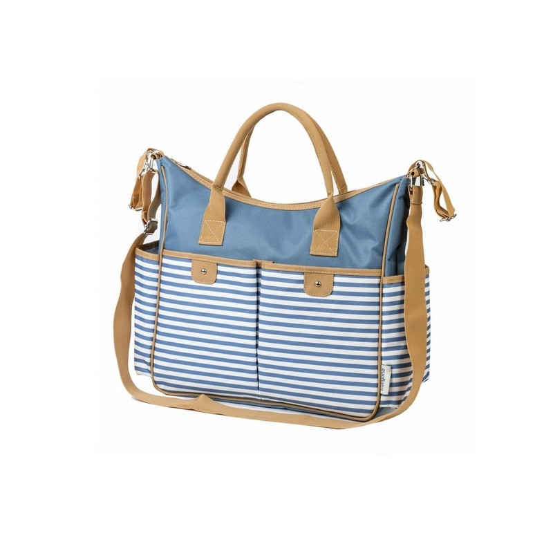

Pirk internetu! Drabužiai kūdikiams - RESERVED
Drabužiai
9,99 EUR
Mergaitės sijonas Eco aware6,99 EUR
Medvilninė palaidinė su užrašu24,99 EUR
Šilta striukė su gobtuvu39,99 EUR
Kūdikio kombinezonas39,99 EUR
Dygsniuota striukė su gobtuvu39,99 EUR
Dygsniuota striukė su gobtuvu34,99 EUR
Dygsniuota striukė su gobtuvu34,99 EUR
Dygsniuota striukė su gobtuvu Premium quality12,99 EUR
Kūdikio megztinis Premium quality12,99 EUR
Kūdikio megztinis7,99 EUR
Kūdikio kelnės7,99 EUR
Kūdikio kelnės24,99 EUR
Dygsniuota striukė su gobtuvu Eco aware4,99 EUR
Medvilniniai marškinėliai su užrašu Eco aware4,99 EUR
Medvilniniai marškinėliai su užrašu17,99 EUR
Kūdikio suknelė34,99 EUR
Pašiltintas kombinezonas su gobtuvu Akcija9,99 EUR
19,99 EUR
Neperšlampama striukė Wear & play5,99 EUR
Medvilniniai marškinėliai su aplikacija14,99 EUR
Dekoratyvinio rašto šenilinis megztinis14,99 EUR
Dekoratyvinio rašto šenilinis megztinis24,99 EUR
Kelnės su petnešomis24,99 EUR
Kelnės su petnešomis Eco aware17,99 EUR
Mergaitės suknelė Eco aware17,99 EUR
Mergaitės suknelė Eco aware9,99 EUR
Gėlėtos sportinės kelnės Eco aware19,99 EUR
Ažūrinė ekologiškos medvilnės suknelė7,99 EUR
Mergaitės kelnės Eco aware7,99 EUR
GIRLS` BLOUSE Eco aware6,99 EUR
Medvilninė palaidinė su raukiniais Eco aware6,99 EUR
Medvilniniai marškinėliai Minnie Mouse Eco aware4,99 EUR
Raštuotos medvilninės tamprės Eco aware4,99 EUR
Medvilninės taškuotos tamprės Eco aware4,99 EUR
Medvilninės taškuotos tamprės Eco aware4,99 EUR
Raštuotos medvilninės tamprės Wear & play12,99 EUR
Mergaitės džemperis39,99 EUR
Pašiltintas paltas su gobtuvu Akcija9,99 EUR
19,99 EUR
Dygsniuota kūdikių striukė7,99 EUR
Mergaitės kelnės7,99 EUR
Mergaitės kelnės Eco aware9,99 EUR
Gėlėtas ekologiškos medvilnės sportinis nertinis Eco aware4,99 EUR
GIRLS` T-SHIRT Eco aware4,99 EUR
GIRLS` T-SHIRT Wear & play12,99 EUR
Baltas sportinis nertinis Minnie Mouse Eco aware4,99 EUR
GIRLS` T-SHIRT Eco aware4,99 EUR
GIRLS` T-SHIRT Premium quality14,99 EUR
Moteriškas megztinis Premium quality14,99 EUR
Moteriškas megztinis Eco aware7,99 EUR
Mergaitės palaidinukė Eco aware7,99 EUR
Mergaitės marškinėliai Eco aware4,99 EUR
Marškinėliai ilgomis rankovėmis su triušio motyvu Eco aware4,99 EUR
Marškinėliai ilgomis rankovėmis su lapės motyvu9,99 EUR
Džemperis su gobtuvu9,99 EUR
Džemperis su gobtuvu Eco aware6,99 EUR
Mergaitės kelnės Eco aware6,99 EUR
Mergaitės palaidinukė Eco aware6,99 EUR
Mergaitės palaidinukė Premium quality14,99 EUR
Lastikinio mezgimo kardiganas Eco aware4,99 EUR
Mergaitės palaidinukė Eco aware4,99 EUR
Mergaitės palaidinukė9,99 EUR
Trikotažinės žąsų kojelių rašto kelnės Premium quality14,99 EUR
Ažūrinis kardiganas Premium quality14,99 EUR
Ažūrinis kardiganas Eco aware9,99 EUR
Kūdikio kelnės24,99 EUR
Dirbtinės odos biker stiliaus striukė14,99 EUR
Minkšto trikotažo kardiganas12,99 EUR
Melanžinis megztinis12,99 EUR
Kūdikio megztinis12,99 EUR
Mergaitės džemperis17,99 EUR
BABIES` DRESS17,99 EUR
BABIES` DRESS17,99 EUR
BABIES` DRESS17,99 EUR
Nėriniuota suknelė14,99 EUR
GIRLS` JOGGING TOP Wear & play12,99 EUR
Kūdikio sportinis džemperis Eco aware6,99 EUR
Medvilniniai marškinėliai su aplikacija9,99 EUR
Kūdikio kelnės Wear & play6,99 EUR
Medvilniniai marškinėliai su aplikacija Wear & play6,99 EUR
Medvilniniai marškinėliai su aplikacija17,99 EUR
Mergaitės suknelė17,99 EUR
Džinsinis kombinezonas Eco aware9,99 EUR
Gėlėtos sportinės kelnės Eco aware6,99 EUR
Medvilniniai marškinėliai su antsiuvu Eco aware6,99 EUR
Medvilniniai marškinėliai su antsiuvu9,99 EUR
Mergaitės kelnės9,99 EUR
Džemperis su gobtuvu17,99 EUR
Kūdikio suknelė12,99 EUR
Medvilninis megztinis su aplikacija17,99 EUR
Gėlėta viskozės suknelė17,99 EUR
Gėlėta viskozės suknelė Eco aware6,99 EUR
Kūdikio palaidinė14,99 EUR
Mergaičių džinsai14,99 EUR
Kūdikių džinsai Akcija8,99 EUR
12,99 EUR
Pašiltintas sportinis nertinis su blizgančia aplikacija24,99 EUR
Mergaitės striukė29,99 EUR
Holografinė dygsniuota striukė4,99 EUR
9,99 EUR
Džinsinės tamprės4,99 EUR
9,99 EUR
Džinsinės tamprės4,99 EUR
9,99 EUR
Džinsinės tamprės4,99 EUR
9,99 EUR
Taškuotos džinsinės tamprės Eco aware4,99 EUR
Medvilniniai marškinėliai su lapės motyvu Eco aware4,99 EUR
Medvilniniai marškinėliai su triušio motyvu9,99 EUR
Užtrauktuku užsegamas džemperis su gobtuvu Wear & play12,99 EUR
Mergaitės džemperis Wear & play12,99 EUR
Mergaitės džemperis9,99 EUR
Taškuotos trikotažinės kelnės Eco aware4,99 EUR
BABIES` T-SHIRT Eco aware6,99 EUR
Kūdikio marškinėliai Eco aware6,99 EUR
Kūdikio marškinėliai Eco aware4,99 EUR
Kūdikio marškinėliai12,99 EUR
Kūdikio palaidinė Eco aware12,99 EUR
Kūdikio kelnės12,99 EUR
Mergaitės megztinis12,99 EUR
Trikotažinės dryžuotos kelnės Eco aware12,99 EUR
Moteriški marškiniai Eco aware5,99 EUR
GIRLS` BLOUSE Eco aware4,99 EUR
Marškinėliai ilgomis rankovėmis14,99 EUR
Sportinis nertinis su apskurusiu krašteliu Eco aware4,99 EUR
Raštuotos medvilninės tamprės Eco aware4,99 EUR
Medvilninės tamprės su triušio motyvu19,99 EUR
Dygsniuota striukė su gėlėmis Eco aware4,99 EUR
Medvilninės taškuotos tamprės Eco aware4,99 EUR
Medvilninės tamprės su lapės motyvu6,99 EUR
Melanžinės sportinės kelnės6,99 EUR
Kūdikio kelnės17,99 EUR
Medvilninio trikotažo komplektas 3 už 2 kaina5,99 EUR
Kūdikių glaustinukė 3 už 2 kaina17,99 EUR
Kūdikio marškinėliai ir kelnės 3 už 2 kaina4,99 EUR
Kūdikių glaustinukė 3 už 2 kaina4,99 EUR
Kūdikių glaustinukė Eco aware2,99 EUR
5,99 EUR
Medvilninis rauktas smėlinukas 3 už 2 kaina4,99 EUR
BABIES` BODY SUIT 3 už 2 kaina4,99 EUR
Raštuotas medvilninis smėlinukas 3 už 2 kaina17,99 EUR
5 ekologiškos medvilnės glaustinukių pakuotė 3 už 2 kaina17,99 EUR
Dviejų dalių sportinis kostiumas 3 už 2 kaina7,99 EUR
Kūdikių glaustinukė ir kelnės su galvos juosta 3 už 2 kaina17,99 EUR
Mergaičių palaidinė ir kelnės 3 už 2 kaina4,99 EUR
Medvilninis smėlinukas su užrašu 3 už 2 kaina4,99 EUR
BABIES` BODY SUIT 3 už 2 kaina4,99 EUR
Raštuotas medvilninis smėlinukas 3 už 2 kaina5,99 EUR
Medvilninė glaustinukė su raštu 3 už 2 kaina6,99 EUR
Raštuotas medvilninis smėlinukas 3 už 2 kaina7,99 EUR
Kūdikių glaustinukė 3 už 2 kaina6,99 EUR
Kūdikių glaustinukė 3 už 2 kaina6,99 EUR
Medvilninis smėlinukas su siuviniais 3 už 2 kaina6,99 EUR
Medvilninis smėlinukas su triušio motyvu 3 už 2 kaina5,99 EUR
Medvilninė glaustinukė su raštu 3 už 2 kaina17,99 EUR
BABIES` BLOUSE & TROUSERS 3 už 2 kaina6,99 EUR
Medvilninis smėlinukas su raukiniais6,99 EUR
12,99 EUR
Tiulinis sijonas9,99 EUR
Kelnės su sijonu tutu Eco aware6,99 EUR
12,99 EUR
Mergaitės sijonas12,99 EUR
Nertas sijonas12,99 EUR
Kūdikio sijonas Eco aware4,99 EUR
Kūdikio pėdkelnės6,99 EUR
2 pėdkelnių iš mikropluošto pakuotė Eco aware4,99 EUR
Kūdikio pėdkelnės Akcija19,99 EUR
34,99 EUR
Pašiltinta striukė su dekoratyviniu pamušalu29,99 EUR
Lengvai pašiltinta parka Eco aware5,99 EUR
9,99 EUR
Sportinis nertinis su apskurusiu krašteliu Eco aware5,99 EUR
9,99 EUR
Mergaitės džemperis Akcija9,99 EUR
19,99 EUR
Neperšlampama striukė Eco aware9,99 EUR
Kūdikio kelnės Eco aware19,99 EUR
Ažūrinė ekologiškos medvilnės suknelė Eco aware6,99 EUR
Medvilniniai marškinėliai Dumbo Eco aware6,99 EUR
12,99 EUR
Medvilninis sportinis nertinis su siuviniais6,99 EUR
Medvilniniai marškinėliai Ariel Princess6,99 EUR
12,99 EUR
Mergaitės kelnės Tik perkant internetu6,99 EUR
12,99 EUR
Minkštas megztinis su raukiniais Eco aware3,99 EUR
6,99 EUR
Medvilniniai marškinėliai Lion King Eco aware3,99 EUR
6,99 EUR
Medvilniniai marškinėliai Dumbo17,99 EUR
Ažūrinė suknelė7,99 EUR
14,99 EUR
Raštuotas sportinis nertinis Eco aware3,99 EUR
6,99 EUR
Medvilninė palaidinė Minnie Mouse7,99 EUR
14,99 EUR
Medvilninis sportinis nertinis su aplikacija14,99 EUR
Minkštas sportinis nertinis Lady and the Tramp6,99 EUR
Medvilniniai marškinėliai Snow White Akcija19,99 EUR
34,99 EUR
Dygsniuota striukė su spaudėmis šonuose Akcija9,99 EUR
19,99 EUR
Dygsniuota striukė su gėlėmis7,99 EUR
14,99 EUR
Trikotažinė suknelė su kaspinu Eco aware9,99 EUR
17,99 EUR
Medvilninė suknelė su raukiniais Tik perkant internetu1,49 EUR
6,99 EUR
Marškinėliai su dekoratyviniais raukiniais Tik perkant internetu1,49 EUR
6,99 EUR
Marškinėliai su dekoratyviniais raukiniais Tik perkant internetu1,49 EUR
6,99 EUR
Marškinėliai su elastingais įsiuvais Tik perkant internetu1,49 EUR
6,99 EUR
Marškinėliai su elastingais įsiuvais Eco aware14,99 EUR
Medvilninė suknelė su išsiuvinėjimais7,99 EUR
14,99 EUR
Minkšto trikotažo megztinis6,99 EUR
12,99 EUR
Raštuotas susagstomas megztinis Eco aware2,99 EUR
4,99 EUR
Medvilniniai marškinėliai su užrašu Eco aware2,99 EUR
4,99 EUR
Medvilniniai marškinėliai su užrašu Eco aware2,99 EUR
7,99 EUR
Medvilniniai marškinėliai su aplikacija Wear & play2,99 EUR
5,99 EUR
Raštuoti marškinėliai Wear & play3,99 EUR
6,99 EUR
Medvilniniai marškinėliai Thumper Wear & play3,99 EUR
7,99 EUR
Medvilniniai marškinėliai su aplikacija Wear & play2,99 EUR
7,99 EUR
Medvilniniai marškinėliai su aplikacija Eco aware1,99 EUR
4,99 EUR
Raštuoti ekologiškos medvilnės marškinėliai Eco aware1,99 EUR
4,99 EUR
Raštuoti ekologiškos medvilnės marškinėliai Eco aware1,49 EUR
4,99 EUR
Mergaitės marškinėliai Eco aware1,49 EUR
4,99 EUR
Raštuoti marškinėliai Eco aware3,99 EUR
6,99 EUR
Marškinėliai su brokatine aplikacija Eco aware3,99 EUR
6,99 EUR
Medvilniniai marškinėliai su kišene Eco aware3,99 EUR
6,99 EUR
Medvilniniai marškinėliai su kišene Eco aware3,99 EUR
6,99 EUR
Medvilninė palaidinė Minnie Mouse Eco aware3,99 EUR
7,99 EUR
Medvilniniai marškinėliai ilgomis rankovėmis Hakuna Matata Eco aware7,99 EUR
Marškinėliai su banguotu krašteliu dekoruotomis ilgomis rankovėmis Eco aware2,99 EUR
5,99 EUR
Medvilniniai marškinėliai su aplikacija Eco aware1,99 EUR
6,99 EUR
Medvilniniai marškinėliai su raukiniais Eco aware1,99 EUR
5,99 EUR
Medvilniniai marškinėliai su aplikacija Eco aware1,49 EUR
6,99 EUR
Marškinėliai su raukinių krašteliu3,99 EUR
5,99 EUR
Raštuoti marškinėliai Tik perkant internetu1,99 EUR
5,99 EUR
Marškinėliai su dekoratyvine kišene Wear & play3,99 EUR
7,99 EUR
Medvilniniai marškinėliai su aplikacija Wear & play2,99 EUR
7,99 EUR
Medvilniniai marškinėliai su aplikacija Eco aware1,99 EUR
4,99 EUR
Gėlėti medvilniniai marškinėliai Eco aware2,99 EUR
4,99 EUR
Medvilniniai marškinėliai su aplikacija Eco aware2,99 EUR
6,99 EUR
Medvilniniai marškinėliai su raukiniais7,99 EUR
12,99 EUR
Sportinis džemperis su aplikacija Eco aware2,99 EUR
5,99 EUR
Mergaitės palaidinė Eco aware2,99 EUR
3,99 EUR
Mergaitės marškinėliai6,99 EUR
Medvilniniai marškinėliai su atspaudu Cinderella Wear & play4,99 EUR
7,99 EUR
Kūdikio marškinėliai Wear & play3,99 EUR
7,99 EUR
Kūdikio marškinėliai Wear & play2,99 EUR
6,99 EUR
Medvilniniai marškinėliai su aplikacija Eco aware2,99 EUR
5,99 EUR
Medvilniniai marškinėliai su raukiniu Wear & play3,99 EUR
6,99 EUR
Medvilniniai marškinėliai su aplikacija3,99 EUR
5,99 EUR
Medvilninė palaidinė3,99 EUR
5,99 EUR
Medvilninė palaidinė39,99 EUR
Neperpučiama striukė su dirbtiniu avikailiu14,99 EUR
Trikotažinė suknelė17,99 EUR
Raštuota suknelė su raukiniais Eco aware3,99 EUR
6,99 EUR
Raštuotos tamprės The Lion King5,99 EUR
19,99 EUR
Medvilninė suknelė su išsiuvinėjimais4,99 EUR
9,99 EUR
Prigludusios kelnės su kišenėmis Eco aware1,49 EUR
4,99 EUR
Raštuoti marškinėliai Eco aware1,99 EUR
5,99 EUR
Medvilniniai marškinėliai su raukiniu ir asimetriška apačia Eco aware3,99 EUR
6,99 EUR
Medvilniniai marškinėliai Lion King Eco aware1,99 EUR
5,99 EUR
Medvilniniai marškinėliai su aplikacija Eco aware1,49 EUR
6,99 EUR
Marškinėliai su raukinių krašteliu6,99 EUR
12,99 EUR
Džemperis su blizgančia aplikacija Eco aware2,99 EUR
4,99 EUR
Medvilniniai marškinėliai su aplikacija Eco aware3,99 EUR
4,99 EUR
Medvilniniai marškinėliai su aplikacija7,99 EUR
14,99 EUR
Medvilniniai marškiniai su dekoratyviniais dryžiais Tik perkant internetu3,99 EUR
7,99 EUR
Marškinėliai su dekoratyviniu raukiniu9,99 EUR
Palaidinė su siuvinėtu užrašu Disney Eco aware1,99 EUR
6,99 EUR
Medvilniniai marškinėliai Looney Tunes Eco aware2,99 EUR
5,99 EUR
Medvilniniai marškinėliai su raukiniu Tik perkant internetu2,99 EUR
5,99 EUR
Lengvi marškinėliai su dekoratyvine kišene3,99 EUR
6,99 EUR
Tamprės su dekoratyvinėmis sagomis Eco aware2,99 EUR
4,99 EUR
Marškinėliai su žavinga aplikacija Eco aware2,99 EUR
4,99 EUR
Organinės medvilnės marškinėliai12,99 EUR
19,99 EUR
Bomber stiliaus striukė Eco aware1,49 EUR
4,99 EUR
Mergaitės marškinėliai24,99 EUR
Pūkuotas kombinezonas su gobtuvu12,99 EUR
Gėlėta palaidinė Eco aware2,99 EUR
5,99 EUR
Medvilninis rauktas smėlinukas 3 už 2 kaina4,99 EUR
Organinės medvilnės glaustinukė 3 už 2 kaina4,99 EUR
Organinės medvilnės glaustinukė Eco aware2,99 EUR
4,99 EUR
Medvilninis smėlinukas su siuviniais Eco aware3,99 EUR
7,99 EUR
Medvilninis smėlinukas su apykakle Eco aware2,99 EUR
4,99 EUR
Raštuotas medvilninis smėlinukas 3 už 2 kaina5,99 EUR
Medvilninis smėlinukas su raukiniais 3 už 2 kaina6,99 EUR
Medvilninis smėlinukas su raukiniais Eco aware3,99 EUR
6,99 EUR
Medvilninis smėlinukas su kutais ir siuviniais Eco aware2,99 EUR
5,99 EUR
Medvilninis smėlinukas su kaspinais12,99 EUR
Nertas sijonas14,99 EUR
Džinsinė suknelė7,99 EUR
9,99 EUR
Raštuotos medvilninės joggers kelnės7,99 EUR
12,99 EUR
Sportinis nertinis su surišama detale Eco aware3,99 EUR
6,99 EUR
Medvilninis smėlinukas su kutais ir siuviniais5,99 EUR
14,99 EUR
Medvilninis sportinis nertinis su blizgučiais7,99 EUR
14,99 EUR
Medvilninės chino kelnėsDrabužiai
Drabužiai kūdikiams, visų pirma, turi būti patogūs. Mažylis daug laiko praleidžia gulėdamas ant nugaros arba pilvuko, mokosi sėdėti ir vaikščioti, todėl jo dėvimi drabužiai neturi jokiais būdais varžyti jo judesių. Patogiausi mažiausiems šliaužtinukai, šliaužtinukai ilgomis rankovėmis ir glaustinukai trumpomis bei ilgomis rankovėmis. Su jais vaikas jaučiasi nesuvaržytas, o tėvai be rūpesčių gali pakeisti jam sauskelnes. Kiek didesni kūdikiai gali būti rengiami marškinėliais, tamprėmis arba kelnėmis. Malonūs liesti audiniai – tai vaiko, pradedančio savarankiškai tirti pasaulį, sąjungininkai. Ypatingai švelnus, o kartu ir patvarus audinis tai organinė medvilnė - be jokios abejonės kūdikių tėvai ją įvertins. Dydžiai 62, 68, 74, 80 ir 86 cm ūgiui leidžia pasirinkti garderobą kūdikiams iki dviejų metų.
Elektroninė parduotuvė
Pagalba ir Kontaktai Pristatymas Prekių grąžinimas Mokėjimai Dydžių lentelė Skundai Atsisakymas Taisyklės Privatumo apsaugos politika EGS PlatformaLietuva (Lithuania)
Parduotuvės
Stacionarios parduotuvės Prekių grąžinimas - stacionarios parduotuvės Kainų etiketėsMano paskyra
Mano užsakymai Paskyros duomenys Pakeisti slaptažodįKarjera
Apie mus Karjera PressroomNAUJIENLAIŠKIS
Follow us on:
Facebook YouTube Instagram PinterestLPP LITHUANIA UAB, Laisvės pr.125 Vilnius LT06118.
Reserved © 2020 Visos teisės saugomos
Užsisakyk naujienlaiškį ir gauk -10% Ar nori sužinoti apie naujausias tendencijas ir pasiūlymus?
Jūsų duomenys yra saugūsMielas Kliente,
siekdami apsaugoti mums patikėtus Jūsų asmens duomenis ir atsižvelgdamię į tai, kad 2018 m. gegužės 25 d. įsigalioja 2016 m. balandžio 27 d. Europos Parlamento ir Tarybos reglamentas (ES) 2016/679, informuojame, kad rūpindamiesi Jūsų duomenų saugumu savo elektroninės parduotuvės sistemoje atlikome keletą duomenų apsaugos pakeitimų.
Mes parengėme naujas Pirkimo elektroninėje parduotuvėje sąlygas ir naują Privatumo užtikrinimo politikos pareiškimą, kurie įsigalios 2018 m. gegužės 25 d. Su jais galėsite susipažinti mūsų svetainėje www.reserved.com , atitinkamai skiltyse http://www.reserved.com/lt/lt/terms ir http://www.reserved.com/lt/lt/privacy-policy . Nuorodos į šiuos dokumentus Jums taip pat bus pateiktos tada, kai lankydamiesi mūsų svetainėje turėsite duoti savo sutikimą tvarkyti Jūsų asmens duomenis arba susipažinti su Pirkimo elektroninėje parduotuvėje sąlygomis.
Remiantis minėtu Reglamentu, Jūs turėsite ne tik teisę susipažinti su savo duomenimis, juos ištaisyti ar ištrinti, bet ir įgysite naujų, pavyzdžiui, teisę prašyti ištrinti Jūsų duomenis, teisę atšaukti sutikimą tvarkyti duomenis ir teisę prieštarauti duomenų tvarkymui. Mes pakeitėme savo parduotuvės sistemą taip, kad ji atitiktų naujus reikalavimus. Jūsų duomenys ir toliau bus saugūs. Jei turite klausimų ar abejonių, prašome nedvejojant kreiptis į mus.
Su išdėstytu tekstu susipažinau